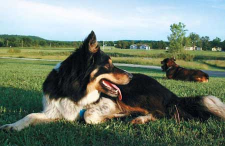

Of the 68 million pet dogs in the United States, most are expectedto perform some kind of guard duty. Dogs have performed in thiscapacity for thousands of years ? and they don't have to be large,imposing breeds to be good watchdogs.
Guard dogs look, listen and bark to sound the alert that somethingunusual is happening in their territory. In return for regularfeeding, periodic veterinary care and grooming, they can be taughtto bark loudly when any strange vehicle enters your driveway, chaseopossums from your deck and rabbits from your garden and many otheruseful tasks. With a little training, you can make your pet a safeand loyal guardian.
Teach your dog to bark and then to go to a family member whensomething unusual happens. To do this, after it barks, call it toyou and reward it with a treat or chew toy. You want to develop areflex so that when a dog senses something unusual, it barks andthen goes to a family member.
A variation of this technique is called 'clicker training.' As thedog carries out a request, you sound a small clicking device (foundat most pet stores) to alert the dog it has performed the correctbehavior, then give it a treat. As a result, the dog learns toassociate the sound of the clicker with the treat. Once theassociation is made, gradually replace the clicker and treat with averbal command.
Some dogs may get carried away with barking, so it may be necessaryto also teach them a 'quiet' command. Sometimes it's helpful to usean 'interrupter,' such as shaking a can with pennies in it, orgiving the quiet command and squirting the dog in the mouth withwater. The dog will stop barking to lick the water; follow that bygiving it a treat. Eventually, the dog should respond to the quietcommand alone, making the noise or water unnecessary.
Security dogs take watchdogging a step further by aggressivelydefending their territory. Because they can be dangerous, securitydogs require special training; owning one is a seriousresponsibility.
Some home security companies suggest putting up a 'Beware of Dog'sign to deter would-be intruders, which may be smart. But goodguard dogs don't have to be scary, just smart barkers.
|
 |
|
|